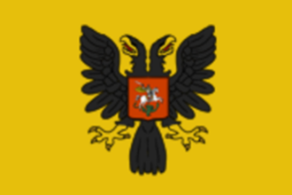

| 伊比利亞 |
| 法蘭西 |
| 低地 |
| 不列顛 |
| 北歐及波羅的 |
| 中歐 |
| 北德意志 |
| 南德意志 |
| 意大利 |
| 巴爾幹及安納托利亞 |
| 東歐 |
|  | |
|---|---|
| 俄羅斯 | |
| 政府等級 | |
| 主流文化 | |
| 首都 | |
| 政體 | 沙皇國 |
| 國教 | |
| 科技組 | 東歐科技組 |
| 俄羅斯的理念 |
此信息可能已落後版本，最後更新於1.35 ----
|
| +33% 全國人力修正 −15% 核心化花費 |
+1 每年正統性
|
|
|
俄羅斯（英文：Russia，俄文：Россия）在1444年遊戲開局時並不存在，它是一個可成立國家，可以由任何符合條件的國家成立。在歷史上， 莫斯科大公伊凡四世（「伊凡雷帝」、「恐怖的伊凡」）於1547年1月16日將自己加冕為「全羅斯人的沙皇及大公」，一般認為這宣告了統一的俄羅斯的誕生。
莫斯科大公伊凡四世（「伊凡雷帝」、「恐怖的伊凡」）於1547年1月16日將自己加冕為「全羅斯人的沙皇及大公」，一般認為這宣告了統一的俄羅斯的誕生。 莫斯科是羅斯諸公國中最強大的一個，相較其它國家有明顯的優勢，因而如歷史一樣，是成立俄羅斯的最佳候選。如果想要嘗試一局富於挑戰性的遊戲，使用
莫斯科是羅斯諸公國中最強大的一個，相較其它國家有明顯的優勢，因而如歷史一樣，是成立俄羅斯的最佳候選。如果想要嘗試一局富於挑戰性的遊戲，使用  諾夫哥羅德成立俄羅斯也是有可能的，而用
諾夫哥羅德成立俄羅斯也是有可能的，而用  梁贊或
梁贊或  特維爾等成立俄羅斯則比前者更加困難。
特維爾等成立俄羅斯則比前者更加困難。
俄羅斯的主要優勢在於它的地理位置、國家理念和特殊能力，在玩家手中，俄羅斯將成為不可戰勝的歐陸霸主；而在AI控制下，它往往一樣會穩步崛起，並最終成長為一個難以對付的強大對手。
任何與俄羅斯作戰過的玩家都應該意識到，它擁有大量的人力和廉價的步兵。如果玩家將部隊推進到了俄羅斯的領土上，其惡名昭彰的嚴冬帶來的損耗又成了另一大挑戰。總而言之，玩家與它爆發的每一場戰爭，都將是一場惡戰。
沙皇國是  俄羅斯與
俄羅斯與  魯塞尼亞專屬的政府改革，政府等級為固定的
魯塞尼亞專屬的政府改革，政府等級為固定的  帝國級，且擁有俄羅斯公國政體的一切專屬機制，故可被視作其之升級。只有擁有俄羅斯公國或衛徹共和國的國家成立上述兩個國家才能獲得此政府改革。此項政府改革限定主流文化屬於斯拉夫文化組，且不是白俄羅斯或魯塞尼亞的東正教國家使用。上述兩個文化的國家則使用魯塞尼亞沙皇國替代沙皇國。
帝國級，且擁有俄羅斯公國政體的一切專屬機制，故可被視作其之升級。只有擁有俄羅斯公國或衛徹共和國的國家成立上述兩個國家才能獲得此政府改革。此項政府改革限定主流文化屬於斯拉夫文化組，且不是白俄羅斯或魯塞尼亞的東正教國家使用。上述兩個文化的國家則使用魯塞尼亞沙皇國替代沙皇國。
沙皇國擁有以下增益：
|
|
只適用於DLC第三羅馬激活時。 |
每月，這個政府會獲得「0.25+0.08君主屬性」的一種特殊君主力量點數（分別對應  /
/ /
/ ）。每種君主點數一旦達到100，即可以在
）。每種君主點數一旦達到100，即可以在  政府介面選擇相應的互動功能：
政府介面選擇相應的互動功能：
若不使用政體功能，點數會一直累計到150點後便不再增加。
|
|
只適用於DLC第三羅馬激活時。 |
沙皇國可以一次性偽造整個地區內全部省份的宣稱，且只比偽造一個省份的宣稱多 +50% 間諜網構造花費。一個地區通常擁有3-5個省份，這一機制可使沙皇國高效率的偽造宣稱，同時也能使其偽造不接壤省份的宣稱。
|
|
只適用於DLC霸業激活時。 |
擁有沙皇國以及大衛徹共和國政府改革的國家將會使用現代化機制。現代化 （英文：Modernization）是一個介於 0 和 100 之間的數值。當現代化達到至少 90 且已經羞辱了至少一個宿敵時，可通過決議獲得全新的俄羅斯帝國以及大俄羅斯聯邦政府改革。
每點現代化將提供  -0.5% 接納思潮花費，當現代化達到 100 時將獲得
-0.5% 接納思潮花費，當現代化達到 100 時將獲得  -50% 接納思潮花費。
-50% 接納思潮花費。
每月現代化程度受到下列因素影響：
此外，可通過下列事件立刻獲得現代化：
|
|
只適用於DLC第三羅馬激活時。 |
DLC  第三羅馬解鎖了
第三羅馬解鎖了  俄羅斯的專屬殖民機制，加速其擴張進入西伯利亞。一旦
俄羅斯的專屬殖民機制，加速其擴張進入西伯利亞。一旦  俄羅斯解鎖了第二個國家理念「西伯利亞前哨站」，與其首都通過非殖民地省份直接陸地相連的未殖民省份便可以建立西伯利亞前哨站。建立前哨站需要花費 20
俄羅斯解鎖了第二個國家理念「西伯利亞前哨站」，與其首都通過非殖民地省份直接陸地相連的未殖民省份便可以建立西伯利亞前哨站。建立前哨站需要花費 20  外交點數，但無需支付前哨站月度殖民地維護費用，
外交點數，但無需支付前哨站月度殖民地維護費用， 移民人數逐月隨機增長 +5與+15之間的一個數值。但因為可以同時建立多個西伯利亞拓荒區，
移民人數逐月隨機增長 +5與+15之間的一個數值。但因為可以同時建立多個西伯利亞拓荒區， 俄羅斯很快就會毗鄰太平洋。
俄羅斯很快就會毗鄰太平洋。
創建自定義國家時，也可以選擇「允許創建西伯利亞拓荒區」的國家理念；顯然它的可使用地區並不只是西伯利亞。
|
|
這條信息可能已不適合當前版本，最後更新於1.35。 |
通過征服以及外交，俄羅斯已經成功從小聚落轉變為一個大公國。經過幾次東征，蒙古汗國也終於被征服，一個由沙皇統治的集權式俄羅斯國家崛起了。來自西歐的影響正幫助我們實現現代化，改革我們的國家。同時，我國也會採用西式教育。
潛在需求
|
接受 |
效果
| |
AI決議因子：
當DLC 霸業開啟時，俄羅斯使用豪華的霸業任務。由
霸業開啟時，俄羅斯使用豪華的霸業任務。由  莫斯科，
莫斯科，  諾夫哥羅德或其他國家成立的俄羅斯任務有所不同。
諾夫哥羅德或其他國家成立的俄羅斯任務有所不同。
當DLC 霸業未開啟而
霸業未開啟而 第三羅馬開啟時，俄羅斯使用第三羅馬任務，許多任務與莫斯科共享。
第三羅馬開啟時，俄羅斯使用第三羅馬任務，許多任務與莫斯科共享。
當兩個DLC均未開啟時，俄羅斯只能使用較簡單的基礎任務。
俄羅斯有着豐富而有趣的歷史，在遊戲中被數個動態歷史事件所概括，包含農奴制的產生和廢除、俄羅斯的大規模擴張以及彼得一世的改革等。其中部分與  莫斯科共享。
莫斯科共享。
俄羅斯於1550年至1650年間有着隨時墮入混亂時期災難的風險，一旦其穩定度低於0，就會觸發這一事件。這一系列事件給予俄羅斯的鄰邦以扶植代理人登上俄羅斯王位的機會，從而引發俄國內部的混亂。為了結束混亂時期，俄羅斯（或莫斯科）必須不處於戰爭中、厭戰度須小於3、沒有正在發生的叛亂、穩定度為正以及沒有「the Usurper on the Throne」修正。一旦所有的條件都滿足了，混亂時期將在平均24個月後發生。
|
|
只適用於DLC第三羅馬激活時。 |
俄羅斯的「沙皇國」政體有一組特殊的相關事件。
俄羅斯特有的射擊軍及西伯利亞拓荒區機制各有一組特殊的相關事件。
|
|
這條信息可能已不適合當前版本，最後更新於1.35。 |
葉卡捷琳娜皇后是一位德國公主，一個與她無能的丈夫相比更強大、更有政治力量的人物。她十分熟悉啟蒙運動的理念，並會努力減輕俄國農奴的負擔。葉卡捷琳娜的計劃是野心勃勃的：她想要篡奪皇位，並把俄國的邊界延伸到鄂圖曼和波蘭境內。我們會幫助她完成她的野心嗎？我們應不應該把她送上俄國的皇位並允許她統治我們？
觸發條件
|
平均發生時間
200 月 |
立即生效
| |
把皇位交給她！
任命她為顧問，並好好利用她的政治能力。
| |
|
|
這條信息可能已不適合當前版本，最後更新於1.35。 |
剛從歐洲旅行歸來的葉卡捷琳娜·羅曼諾芙娜·沃倫佐娃-達什科娃親王妃是葉卡捷琳娜大帝忠實的朋友。雖然她們之間的關係曾因葉卡捷琳娜親王妃認為女皇選擇的情人玷污了宮廷而疏遠，但這位親王妃在歸國之後已經顯得更加成熟與寬容。在她的旅行中，葉卡捷琳娜在大多數國家的都城中都因她在文學和科學上的名聲而得以進入文化人的社交圈子中。這也使得她被任命為俄國皇家藝術科學院的院長，成為了歐洲第一個擔任國家級科學院長官的女性。儘管這所正在衰落的科學院缺少名氣與學術上的聲望，但葉卡捷琳娜成功地在科學史上的關鍵時刻拯救了這所科學院。科學院由一個天才業餘愛好者討論自然哲學的地方，到一個專業學術機構的轉變，才剛剛開始。
觸發條件
|
平均發生時間
200 月 |
立即生效
| |
將她升職為顧問
她的名字將會被傳頌下去……
| |
|
|
這條信息可能已不適合當前版本，最後更新於1.35。 |
雖然由多個不同的親戚撫養長大而僅受到有限的教育，安娜·布寧娜仍是一位受追捧的作家。她依靠着贊助人的幫助、[Root.GetAdjective]$MONARCHTITLE$給予的養老金以及作品的稿費養活自己。他父親留給她的有限的遺產被她用來聘請家教以繼續她的教育。她的導師是亞歷山大·希什科夫，同時她也是「俄語愛好者」與「文學、科學和藝術愛好者的自由社團」的榮譽成員。作為一個女人，她無法親自與「俄語愛好者」社團討論她的作品，而與社團其他成員的關係儘管對她的文學生涯不無好處，但是仍然是十分沉悶的。她的第一部作品叫作《沒有經驗的繆斯》。
|
|
這條信息可能已不適合當前版本，最後更新於1.35。 |
在索菲婭於阿列克謝一世去世之際，一面進入[Root.GetAdjective]政壇、一面提攜她的兄弟費奧多爾登上皇位之前，宮廷從不為女人敞開大門。這位沙皇起初完全受到索菲婭的擺布，但隨着他健康狀況的惡化，越來越多的人把沙皇染病當成可乘之機，這使得她的控制越來越艱難。在費奧多爾去世時，索菲婭的兩個弟弟被並列為沙皇，但因為哥哥伊凡在身體上和智力上都有缺陷，而當時只有9歲的弟弟彼得還無法統治$COUNTRY$，索菲婭成為了實際的掌權者。通過參加費奧多爾的葬禮，她正式踏上了政治舞台，並計劃通過各種人脈、盟友與對瓦西里·戈力岑親王等優秀政治家的巧妙利用來自己登上皇位。當時女人還不允許參政議政，因此這一舉動引起了不少騷亂，但在射擊軍的幫助之下她成功發動了起義並保住了她的地位。在她為費奧多爾垂簾聽政時，她受到了良好的教育，而正是她所學到的對政治問題的見解使得貴族們和牧首相信她治理$COUNTRY$的能力。雖然索菲婭掌握國家才不久，她已經證明了一點：如果她登上皇位，那麼她一定會用堅定的鐵腕統帥着這片土地。她已經開始準備擴軍並建立一座提供高等教育的學府。
觸發條件
|
平均發生時間
200 月 |
立即生效
| |
索菲婭將以顧問的身份統帥這篇土地，僅此而已
廢黜她的兄弟們，讓她成為女沙皇！
| |
|
|
這條信息可能已不適合當前版本，最後更新於1.35。 |
儘管伊麗莎白所受到的教育並不完美而且斷斷續續，她仍不失為一個聰明、活潑而美麗，同時又精通意大利語、德語和法語的女子。值得一提的是，如果我們同意讓她上台，那麼她奪取[Root.GetAdjective]王位的政變就將成功。在安娜·列奧波多夫娜代替她年幼的伊凡六世的攝政統治下，國家出現了包括高稅收在內的諸多經濟問題，這也促進了伊麗莎白的影響。俄羅斯禁衛部隊支持着她，這一強大的勢力也可能迫使我們讓她登上王位。雖然她保證不會簽署死刑判決，但是這並不代表流血是不利的。她只用了一句話「你們想要服侍誰？是我，名正言順的君主，還是那些搶走我的繼承權的人？」就讓普列奧布拉任斯基軍團向她俯首稱臣。在登上王位前，伊麗莎白便表現出了敏銳的判斷力與外交上的分寸，使我們想起了她的父親彼得大帝。有傳言稱令人敬畏的外交家阿列克謝·別斯圖熱夫-魯明將會成為她的新一任副總理大臣，同時她也表達了對現行的內閣議會系統的不滿，希望讓議會制度重回彼得大帝時期的形式，讓國家各部門的部長參與。在她的統治之下，也許我們能夠建立莫斯科大學和皇家藝術學院？
觸發條件
|
平均發生時間
200 月 |
立即生效
| |
進行干涉，讓她成為宮廷的一名顧問。
我們會讓她統治$COUNTRY$。
| |
|
|
這條信息可能已不適合當前版本，最後更新於1.35。 |
安娜從小便被培養為修女，成長也被限制在一個宗教氣息濃重的皇家家庭之中，使得她的性格沒有得到正常的發展，或許能夠解釋她在成年後的偏執與殘暴。[Root.GetAdjective]最高樞密院已經決定要公開地支持她成為我們新一任的統治者，希望她能夠成為一個傀儡，或者至少讓樞密院能夠在她背後操控政壇。一系列限制她權力的法律已經開始起草，其中包括禁止安娜發動戰爭、提議和平、添加新稅或者提拔高官。她也不能不經審判就懲罰貴族、賜予莊園或者村莊、提拔任何人到宮廷，同時她也不能動用國庫內的收入。有800名貴族已經聽說了安娜即將登上王位的傳聞，並聯名請願她用專制的方式統治$COUNTRY$，並執行彼得大帝的政治、社會和經濟改革措施。安娜不太可能是一個容易被掌控的人，更不用說傀儡。她在早年便被帶入了[Root.GetAdjective]的宮廷，使得她對政治系統十分熟悉。在禁衛部隊和少數貴族的青睞下，安娜將無所顧忌。
觸發條件
|
平均發生時間
200 月 |
立即生效
| |
我們無法信任她的意志，但我們可以信任她的智慧。
支持她，讓她登上皇位。
| |
腳本代碼位於：/Europa Universalis IV/decisions/Russia.txt。
|
|
這條信息可能已不適合當前版本，最後更新於1.35。 |
君士坦丁堡已經不再是基督教的堡壘和防禦力量。我們需要接過重任，建立第三羅馬。
潛在需求
|
接受
|
效果
| |
AI決議權重：
|
|
這條信息可能已不適合當前版本，最後更新於1.35。 |
作為更加西化的東方國度，俄羅斯的首都必須置於西方，聖彼得堡就是我們不落的太陽！
潛在需求
|
接受
|
效果
| |
AI決議權重：
|
|
這條信息可能已不適合當前版本，最後更新於1.35。 |
長久以來，[Root.Capital.GetContinentName]的其他大國一直認為我們實力虛弱，不值得在世界舞台上引起關注。 我們必須向他們展示我們不是荒廢破敗的蕞爾小國，而是名正言順的帝國。我們必須通過力量和優越性來展示我們的實力！
潛在需求
|
接受
|
效果
| |
AI決議權重：
|
|
這條信息可能已不適合當前版本，最後更新於1.35。 |
民眾開始變得不安。推廣我們的伏特加產品銷售可能會改善我們人民的情緒。 或者至少可以將他們的攻擊轉向彼此。
潛在需求
|
接受
|
效果
| |
AI決議權重：
俄羅斯可以由任何符合條件的文化為莫斯科、諾夫哥羅德或梁贊的國家成立。任何如果還沒有成立俄羅斯的話，可以參考  莫斯科、
莫斯科、 諾夫哥羅德的策略章節。當然，
諾夫哥羅德的策略章節。當然， 梁贊、
梁贊、 奧多耶夫等國家也可以統一羅斯，不過要艱難得多。
奧多耶夫等國家也可以統一羅斯，不過要艱難得多。
在宣稱成為全羅斯人的沙皇之後，俄羅斯的實力將大大強於周遭的大多數國家， 喀山、
喀山、 大帳、
大帳、 諾蓋、
諾蓋、 烏茲別克等游牧國家是很容易的擴張對象。俄羅斯特有的西伯利亞拓荒區也可以讓你很輕鬆地向東方未知的邊疆進行擴張。這時的俄羅斯，應該是一個幅員遼闊的世界主要列強了，但是你會發現你的國家面臨着一個巨大的問題——貧窮。積極的擴張政策可能是解決經濟問題的一把鑰匙，向
烏茲別克等游牧國家是很容易的擴張對象。俄羅斯特有的西伯利亞拓荒區也可以讓你很輕鬆地向東方未知的邊疆進行擴張。這時的俄羅斯，應該是一個幅員遼闊的世界主要列強了，但是你會發現你的國家面臨着一個巨大的問題——貧窮。積極的擴張政策可能是解決經濟問題的一把鑰匙，向  丹麥、
丹麥、 波蘭立陶宛聯邦等鄰國的大規模擴張讓你有機會奪取他們富庶領土。
波蘭立陶宛聯邦等鄰國的大規模擴張讓你有機會奪取他們富庶領土。
如果能成功支持  瑞典獨立的話，那麼侵吞斯堪的納維亞的難度會降下來不少。
瑞典獨立的話，那麼侵吞斯堪的納維亞的難度會降下來不少。  波蘭立陶宛聯邦將是俄羅斯的主要對手，應該儘早遏制它、擊敗它，否則它將是一個難纏的對手。不過隨着向西、向南的擴張，俄羅斯也終將與
波蘭立陶宛聯邦將是俄羅斯的主要對手，應該儘早遏制它、擊敗它，否則它將是一個難纏的對手。不過隨着向西、向南的擴張，俄羅斯也終將與  鄂圖曼陷入對抗。在前期
鄂圖曼陷入對抗。在前期  鄂圖曼的實力頗為強大，因而最好不要輕易招惹，而遊戲進入中期後，鄂圖曼的優勢期逐漸過去，而你的實力則不斷增長，可以考慮與其進行當面鑼對面鼓的戰爭。
鄂圖曼的實力頗為強大，因而最好不要輕易招惹，而遊戲進入中期後，鄂圖曼的優勢期逐漸過去，而你的實力則不斷增長，可以考慮與其進行當面鑼對面鼓的戰爭。
在侵吞南俄草原後，南方的波斯地區也將是擴張的良好目標，而更遙遠的印度則更加富饒，作為歐洲國家，還可以在印度開設貿易公司，賺取豐厚的利潤。在進行了充分的擴張後，可以將貿易本埠遷到更容易控制、貿易值來源更多的貿易節點。
 丹麥和
丹麥和  瑞典控制着波羅的海沿岸的大部分地區，成為俄羅斯後通常玩家接壤。假如瑞典尚未獨立，則此時獨立傾嚮往往很低，但全境羞辱一次丹麥很容易拉回獨立傾向。
瑞典控制着波羅的海沿岸的大部分地區，成為俄羅斯後通常玩家接壤。假如瑞典尚未獨立，則此時獨立傾嚮往往很低，但全境羞辱一次丹麥很容易拉回獨立傾向。
如果瑞典已經獨立，則可結盟丹麥來保護西北邊境的安全。通常瑞典更喜歡統一斯堪的納維亞地區，而丹麥通常會嘗試占領北德、波羅的海海岸和愛沙尼亞等地。在任何一種情況下，結盟他們都會鼓勵其按照其應有的路線擴張，並幫助你抗衡  波蘭。
波蘭。
波蘭往往會和立陶宛形成聯合統治，即使不也往往會結盟。成為俄羅斯前，其強大的附庸軍隊往往使之不可戰勝。中後期憑藉體量可以輕鬆打垮之。
從1479年開始，沙皇的血統中就已經融入了拜占庭帝國的遺產，而收復巴爾幹、宣稱第三羅馬也能通過相應決議遷都沙皇格勒。這是條比較情懷的路線，而且巴爾幹的東正教土地比較適合擴張，鄂圖曼帝國往往也是玩家潛在的敵人。結盟神羅皇帝在地緣上能為你提供對抗鄂圖曼、丹麥和波立的強勁助力。
一旦成立俄羅斯，玩家就獲得了對歐洲游牧的宣稱。然而，當玩家征服這些土地時，需要注意的是韃靼們都是  遜尼派，這將導致宗教騷亂問題，並減少宗教團結。減少宗教團結也會增加腐敗。因此，建議要等到玩家有轉換或容忍這種異教的手段（例如宗教或者人文主義理念的效果，建議首發宗教）。另一種策略是附庸那些遜尼派國家，而不是直接吞併遜尼派的土地。莫斯科開局有一個遜尼派省份卡西莫夫，該省擁有
遜尼派，這將導致宗教騷亂問題，並減少宗教團結。減少宗教團結也會增加腐敗。因此，建議要等到玩家有轉換或容忍這種異教的手段（例如宗教或者人文主義理念的效果，建議首發宗教）。另一種策略是附庸那些遜尼派國家，而不是直接吞併遜尼派的土地。莫斯科開局有一個遜尼派省份卡西莫夫，該省擁有  卡西姆的核心，可以作為附庸釋放，並且利用它來征服韃靼部落的土地。如果威望和關係足夠，玩家可以強迫卡西姆轉為東正教，並且利用自己的傳教士在卡西姆新征服的韃靼土地傳教（由於同在韃靼文化組，因此傳教時會少一個異文化導致的-2%懲罰）。開局擁有封建思潮的莫斯科應該能夠比部落更快地推進軍事科技，並等待他們在軍事科技上落後於時代，特別是在提升一級科技水平能給予軍事戰術，士氣和更高級單位時，征服他們顯得更加容易。
卡西姆的核心，可以作為附庸釋放，並且利用它來征服韃靼部落的土地。如果威望和關係足夠，玩家可以強迫卡西姆轉為東正教，並且利用自己的傳教士在卡西姆新征服的韃靼土地傳教（由於同在韃靼文化組，因此傳教時會少一個異文化導致的-2%懲罰）。開局擁有封建思潮的莫斯科應該能夠比部落更快地推進軍事科技，並等待他們在軍事科技上落後於時代，特別是在提升一級科技水平能給予軍事戰術，士氣和更高級單位時，征服他們顯得更加容易。
如果玩家征服了東部的韃靼部落，他們可能會發現自己與  大明的朝貢國共享邊界。大明開局時擁有最高發展度，最大陸軍上限以及大量朝貢國。然而，與大明相比，莫斯科有幾個獨特的優勢和劣勢：首先，莫斯科（以及俄羅斯）更接近歐洲，這意味着他們可以比大明更早接納前三個思潮，但大明可以要求他的朝貢國的點數來彌補這一點。其次，由於莫斯科的國家理念，大明人力上限往往比莫斯科更低，但是大明是唯一可以將其人力上限提高6倍的國家——朝貢機制允許大明處於和平狀態且由朝貢國拱衛時，讓大明人力超過上限。另一方面，大明對莫斯科的入侵將意味着在冬季產生大量的損耗，如果他們在戰爭初期沒有超過人力上限，理論上可能會耗盡他們的人力。
大明的朝貢國共享邊界。大明開局時擁有最高發展度，最大陸軍上限以及大量朝貢國。然而，與大明相比，莫斯科有幾個獨特的優勢和劣勢：首先，莫斯科（以及俄羅斯）更接近歐洲，這意味着他們可以比大明更早接納前三個思潮，但大明可以要求他的朝貢國的點數來彌補這一點。其次，由於莫斯科的國家理念，大明人力上限往往比莫斯科更低，但是大明是唯一可以將其人力上限提高6倍的國家——朝貢機制允許大明處於和平狀態且由朝貢國拱衛時，讓大明人力超過上限。另一方面，大明對莫斯科的入侵將意味着在冬季產生大量的損耗，如果他們在戰爭初期沒有超過人力上限，理論上可能會耗盡他們的人力。
在1.29 版本之前，玩家有兩種策略：其一是直接成為他們的朝貢國，並吃掉其他朝貢國，當玩家擁有足夠強大的盟友時迅速切斷朝貢關係；或者，玩家可以嘗試與大明接壤而不成為其朝貢國，以此慢慢耗盡大明的天命。在這種情況下，隨之而來的將是大明有可能發動的一場過程極為殘酷的強迫朝貢戰爭。無論玩家選擇何種方法，都建議玩家與  大明接壤，趁其剛剛完成一次天命改革時進攻。和約期間建議玩家與大明的朝貢國開始戰爭，以獲取額外的土地，同時繞過停戰期打擊大明本身。
大明接壤，趁其剛剛完成一次天命改革時進攻。和約期間建議玩家與大明的朝貢國開始戰爭，以獲取額外的土地，同時繞過停戰期打擊大明本身。
1.29 版本之後，由於朝貢機製發生變化，接壤非朝貢國不再損失天命。然而，接壤一個超過300發展度的游牧國家幾乎必然會觸發沒有防備的游牧邊疆災難，從而給天朝帶來危機。玩家可以選擇附庸一個游牧國家並給它餵地，使其滿足發展度需求並與大明接壤，以誘導災難爆發。
如果大明深陷災難不能自拔，或者受到大順和滿洲的侵襲，那麼南下將更為容易，進而將廣大的中原設置為貿易公司，減少遠東叛亂。
而當擴張至瀕臨太平洋時，北美洲西海岸的無主之地也可以成為新的殖民地，直接開擴張理念，如同歷史一般殖民阿拉斯加並深入內陸。
當DLC 霸業開啟時，俄羅斯將觸發一系列事件鏈，讓玩家在奴役農民與解放農民之間做出抉擇，由於該事件鏈時間跨度大，且可以在兩種路線間反覆，因此非常複雜，在此對該事件鏈做出一些總結，詳細內容還請參考俄羅斯事件與基礎階層頁面。
霸業開啟時，俄羅斯將觸發一系列事件鏈，讓玩家在奴役農民與解放農民之間做出抉擇，由於該事件鏈時間跨度大，且可以在兩種路線間反覆，因此非常複雜，在此對該事件鏈做出一些總結，詳細內容還請參考俄羅斯事件與基礎階層頁面。
注意，與農奴制相關的特權無法手動移除，只能通過事件更換，獲得新的農奴制特權時會移除上一階段的農奴制特權。
一、遊戲早期
開局時玩家便已解鎖兩項對立的波雅爾特權「早期農奴制」與「增進農民自由」。前者將給予+10%國家人力、-1叛亂、-50%戰爭稅花費、-20%思潮傳播，同時增加波雅爾階層的忠誠度和影響力；後者則給予-20%國家人力、+10%思潮傳播，同時減少波雅爾階層的忠誠和影響力。授予任何一種階層特權都會在一段時間後觸發一支小規模的叛軍，選擇壓迫農民將觸發農民叛軍，選擇解放農民將觸發貴族叛軍。
即使玩家不授予這兩種特權之一，在成立俄羅斯一段時間後也將觸發事件強迫玩家在兩種路線種做出選擇。
考慮到遊戲前期國家人力的稀缺以及對階層忠誠的需求，比較建議玩家選擇早期農奴制。
二、12級行政科技
在升級到12科技後，將隨時間概率觸發事件，要求玩家做出進一步的抉擇，此階段對立的兩項特權為「制度化農奴制」與「解放農民」，它們將取代上一階段的特權。前者與早期農奴制相比，增加國家人力的效果從+10%提升為+20%，但移除了減少國家叛亂的效果並增加了+5%的科技花費與+5%理念花費的負面效果；後者相較於增進農民自由，額外降低5%的波雅爾忠誠度。
如果玩家在上一階段選擇了早期農奴制，所觸發事件的影響較小：進一步壓迫農民將獲得一筆杜卡特，轉而解放農民將降低波雅爾25的忠誠度並觸發一支貴族叛軍。如果玩家在上一階段選擇了增進農民自由，所觸發的事件將影響到國家的穩定度：如果進一步解放農民將失去2點穩定，但轉變國家政策選擇壓迫農民反而能增加1點穩定。
考慮到在成立俄羅斯後玩家需要儘快獲取現代化進度以升級政體，而壓迫農民路線將每月減少大量現代化進度，解放農民路線將每月增加大量現代化進度，因此在這一階段比較建議玩家選擇解放農民的路線。
三、17級行政科技
17級行政科技後會有新的事件改革農奴制，此階段是玩家改換路線的最後機會，對立的特權為波雅爾特權「全面農奴制」與市民特權「新中產階級」。全面農奴制的效果為-100%戰爭稅花費、+25%全國人力，但也會-20%思潮傳播、+10%科技花費、+10%理念花費，該特權不會影響專制度上限；新中產階級效果為+20%思潮傳播、-10%科技花費、-10%理念花費，代價為-20%全國人力、-10%國家稅收、-5專制度上限。
如果玩家在上一階段選擇了制度化農奴制，將觸發事件「大起義」，使東歐生產穀物、牲畜、羊毛的省份+15叛亂並-50%當地人力，持續十年，同時立即產生一支農民叛軍。在大起義持續至少兩年後將觸發事件「反動政策」，如果玩家繼續壓迫農民將獲得1穩定、獲得特權全面農奴制、產生一支農民叛軍，如果轉而解放農民將失去2穩定、獲得特權新中產階級。
如果玩家在上一階段選擇了解放農民，將觸發事件並獲得特權「市民階層的崛起」，該特權將增加國家的貿易效率，但會降低大量專制度上限並使得市民階層豁免回收領地，總的來看得不償失，該特權與其他事件獲得的特權不同，可以手動撤銷，因此建議儘快撤銷該特權。無論玩家是否撤銷特權，後續事件將在至少兩年後觸發，如果玩家繼續解放農民，將獲得特權新中產階級，同時產生貴族叛軍，如果玩家轉而壓迫農民，將失去2點穩定，並產生排他主義叛軍。
該階段選擇的特權將持續很長時間，而且此階段是玩家轉換路線的最後機會，玩家應根據自己的需要謹慎選擇。考慮到俄羅斯的政體、國家理念、擴張速度等因素，不太缺人力時解放農民的路線可能是比較好的選擇。
四、啟蒙主義
在玩家接納啟蒙主義思潮後，農奴制將引來最後一次改革。
如果玩家在上一階段選擇了全面農奴制，在此階段可以選擇對其進行有限的改革：提升農民生活水平降低2點國家穩定度，將農奴制特權更換為「受限農奴制」，效果為-1叛亂、+10%國家人力，同時-20%思潮傳播、+10%科技花費、+10%理念花費；進一步壓迫農民提升1點國家穩定度，將農奴制特權更換為「駭人聽聞的農奴制」，效果為-2叛亂、+33%國家人力，但同時將承受-50%思潮傳播、+25%提升發展度花費、+15%科技花費、+15%理念花費的巨大負面效果，這將嚴重限制俄羅斯的科技發展，恐怕並不合算。
如果玩家在上一階段選擇了新中產階級，在此階段將觸發事件轉換政體：要麼失去2點穩定度，同時移除特權「市民階層的崛起」和「新中產階級」，要麼失去1點穩定度，並將政體轉換為共和制，如果玩家在此之前已經通過決議「宣稱皇帝頭銜」升級了自己的政體，在轉換政體後無法使用高級政體「大俄羅斯聯邦」，因此不建議這麼做。
五、彩蛋——革命與農奴制的末路
在玩家接納革命思想並成立革命共和國後，農奴制度將迎來它的終結：
如果此時玩家擁有邪惡的早期農奴制、制度化農奴制、全面農奴制、受限農奴制或是駭人聽聞的農奴制，受壓迫的農民們將揭竿而起，正義地打爛波雅爾的狗頭；
如果此時玩家擁有假惺惺的增進農民自由、解放農民，受壓迫的農民們將揭竿而起，不那么正義地打爛波雅爾的狗頭。
（正常情況下後者不太可能出現，因為解放農奴的路線會將特權更換為新中產階級）

All belongs to Mother Russia 一切屬於俄羅斯母親 以俄羅斯文化的國家開局，成立俄羅斯。 |

Relentless Push East 不懈向東 以俄羅斯文化國家開局，在1600年前擁有東西伯利亞海岸線。 |

Triple the Rome 三重羅馬 作為俄羅斯，成為中國和神聖羅馬帝國的皇帝。 |
| 伊比利亞 |
| 法蘭西 |
| 低地 |
| 不列顛 |
| 北歐及波羅的 |
| 中歐 |
| 北德意志 |
| 南德意志 |
| 意大利 |
| 巴爾幹及安納托利亞 |
| 東歐 |
| 北非 |
| 東非 |
| 中非 |
| 東南非 |
| 西非 |
| 西南非 |
| 近東 |
| 波斯及中亞 |
| 北亞 |
| 東亞 |
| 東南亞 |
| 印度 |
| 中美洲 |
| 墨西哥 |
| 北美東北 |
| 北美東南 |
| 北美中西部 |
| 部落聯盟國家 |
| 前殖民領國家 | |
| 海盜共和國 |
| 南美北部 |
| 安第斯山區 |
| 南美東部 |
| 南美南部 |
| 前殖民領國家 |
| 澳大利亞 |
| 南太平洋 |
| 北太平洋 |
| 前殖民領國家 |